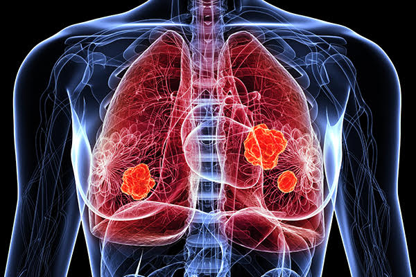
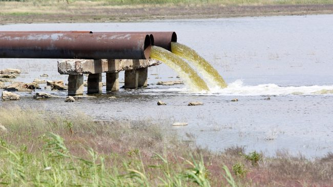
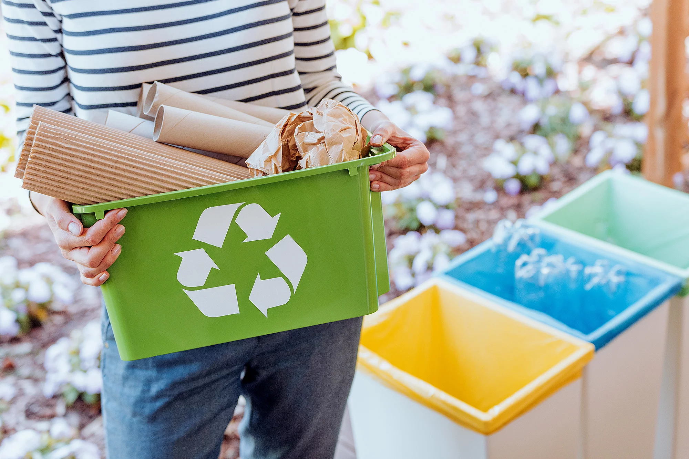
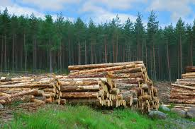
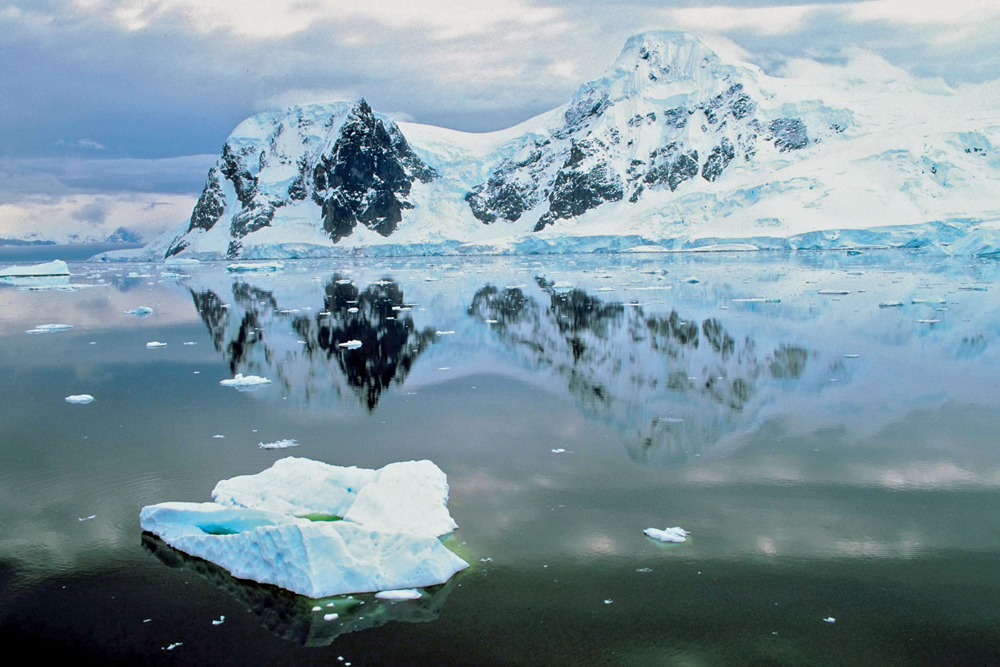
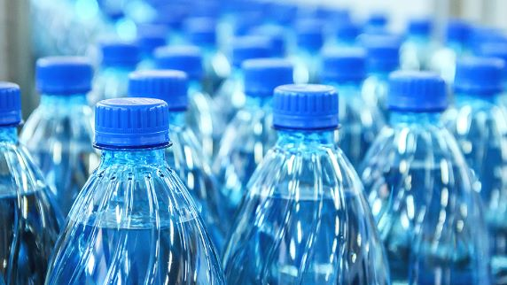

Facts about Pollution and the Environment
- Over 1 million seabirds and 100,000 sea mammals are killed by pollution every year.
- People who live in places with high levels of air pollutants have a 20% higher risk of death from lung cancer than people who live in less-polluted areas


- Each year 1.2 trillion gallons of untreated sewage, stormwater, and industrial waste are dumped into US water
- Recycling and composting prevented 85 million tons of material away from being disposed of in 2010, up from 18 million tons in 1980


- The United States produces 30% of the world’s waste and uses 25 % of the worlds natural resources
- More than 3 million kids under the age of 5 years die every year due to environmental factors like pollution.


- There are more around 73 various kinds of pesticides in the groundwater, which is used as drinking water.
- Antarctica is the cleanest place on Earth protected by anti-pollution laws.
- Americans buy more than 29 million bottles of water every year. Only 13% of these bottles are recycled every year.